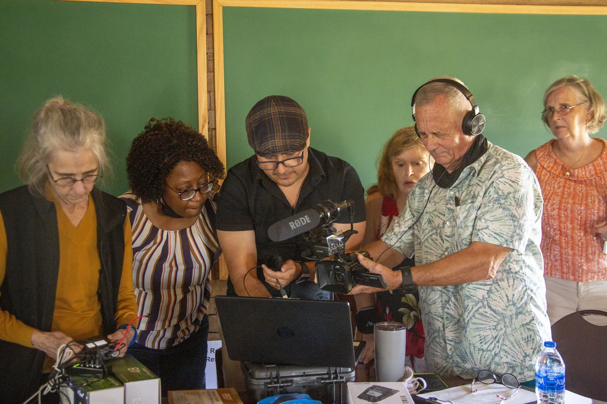
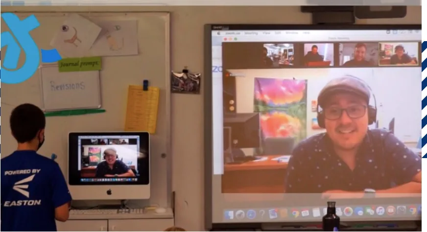
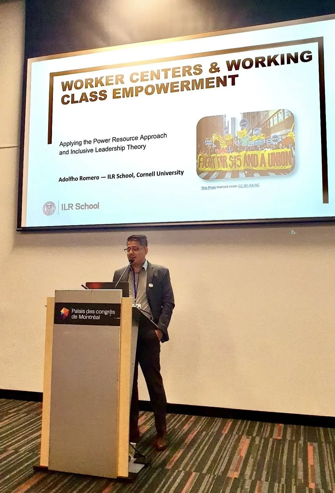

- 12weeks of discussion sections
- 0in-class activities
- 0readings and materials
- 0linked sources and resources
Course explorer
Week by Week
Open any week to see what we did and what we read. Mark weeks as reviewed to keep your place; your progress is saved in this browser.
No weeks match that search.
In the room
How It Feels in Section
Hands-on workshops, discussion, and presenting on worker centers and working-class empowerment.


